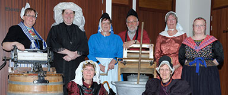

<div class="event-info">
	<div>
		<div class="img-wrap">
	
		</div>
		<div class="songs">
			<p>...</p>
			<p>...</p>
			<p>...</p>
			<p>...</p>
			<p>...</p>
		</div>
		<div class="content-wrap">
    <p><strong>Zanggroep "We willen zo graag" uit Zaandam</strong></p>
	<p>Zanggroep “We willen zo graag” bestaat uit 6 dames. Dit Zaanse koor zingt A-capella driestemmige liederen vanaf de jaren 40 tot nu.</p>
	<p>"WWZG" treedt op in oud-Hollandse klederdracht om het Nederlands erfgoed te behouden.</p>
	<p>&nbsp;</p>
	<p>Dirigent: Carry van der Gulik</p>
	<p>&nbsp;</p>
	<p><a href="http://www.wwzg.nl" target="_blank">http://www.wwzg.nl</a></p>
		</div>
	</div>
</div>